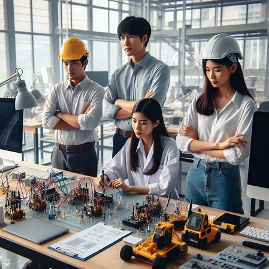

Engineer
1.What is engineer?
Engineers, as practitioners of engineering, who invent, design, build and test machines, complex systems, structures, Sculptures, gadgets and materials to fulfil functional objectives and requirements while considering the limitations imposed by practicality, regulation, safety and cost.
2. Types of engineers
1. Aerospace Engineering: Aerospace engineers work to develop things that fly-airplanes, spacecraft, missiles, and so on. They do so by incorporating physics principles such as lift, drag, and thrust.
2. Automobile Engineering:
3. Agricultural Engineering: Farm power and machinery, biological material processes, bioenergy, farm structures and agricultural natural resources
4. Architechtural Engineering:
5. Biomedical Engineering: The application of engineering principles to study and manipulate biological systems at the molecular level.
6. Chemical Engineering: Chemical engineering is about designing new chemicals for all kinds of uses. They develop plastics and other polymers, fuels, medicines, and many other types of chemical compounds, as well as the processes that are used to make these things from raw materials.
7. Civil Engineering: The neglected step-children of engineers, civil engineers design some of the most important systems. They design systems to supply people with clean water as well as systems to clean it back up after use
8. Computer Engineering: The design and control of computing devices with the application of electrical systems. It involves the study of hardware and software systems that can process information, as well as digital logic design, computer architecture, and programming languages.
9. Electrical Engineering: Electrical engineers develop machines and equipment that are used in manufacturing, vehicles, research, etc.
10. Electronics and Communication: Electronics engineers and communication engineers design things like computer systems and telecommunications systems. Electronics engineers design systems that incorporate things like motors and actuators as well as small electronics.
11. Industrial Engineering: Industrial engineers and production engineers develop systems to increase efficiency in industrial and manufacturing facilities.
12. Information Technology: Generation, distribution, analysis, and use of information, data and knowledge in systems
13. Mechantronics Engineering: Mechanical and electrical engineering hybrid
14. Mechanical Engineering: Mechanical engineers design many types of machines, such as engines for vehicles and industrial uses, refrigeration systems for restaurants and food storage, turbines for power generation, and more.
15. Mining: A mining engineer can assist us in safely building a mine for digging up things like coal or gold for energy production or for making electronics and jewelry.
16. Nanoengineering: The introduction of nanotechnology into existing fields of engineering.
17. Nuclear Engineering: The nuclear reactors that play a crucial role in producing nuclear energy are designed and built by nuclear engineers.
18. Quantum Engineering: Terrestrial and marine nuclear power plants
19. Textile Engineering: Textile engineering courses deal with the application of scientific to the design and control of all aspects of fiber, textile and apparel processes, products and machinery.
3. How to become an engineer
There are two main engineering course formats available in India, when it comes to undergraduate level. They are-
• Diploma in Engineering:
Diploma in Engineering is a 3 years long course. Diploma course can be pursued after completing 10th standard from a recognized board. This course can also be pursued after completing 12th standard (Science stream- Mathematics group).
• Bachelor of Engineering or Bachelor of Technology (B.E. or B.Tech.):
B.E. or B.Tech. program lasts for a period of 4 years. This course can be pursued after completing 12th standard (Science stream- Mathematics group).
After passing 12th one must also appear for and score valid marks in relevant entrance exams. JEE, State-wise CETs and Institute-wise CETs.